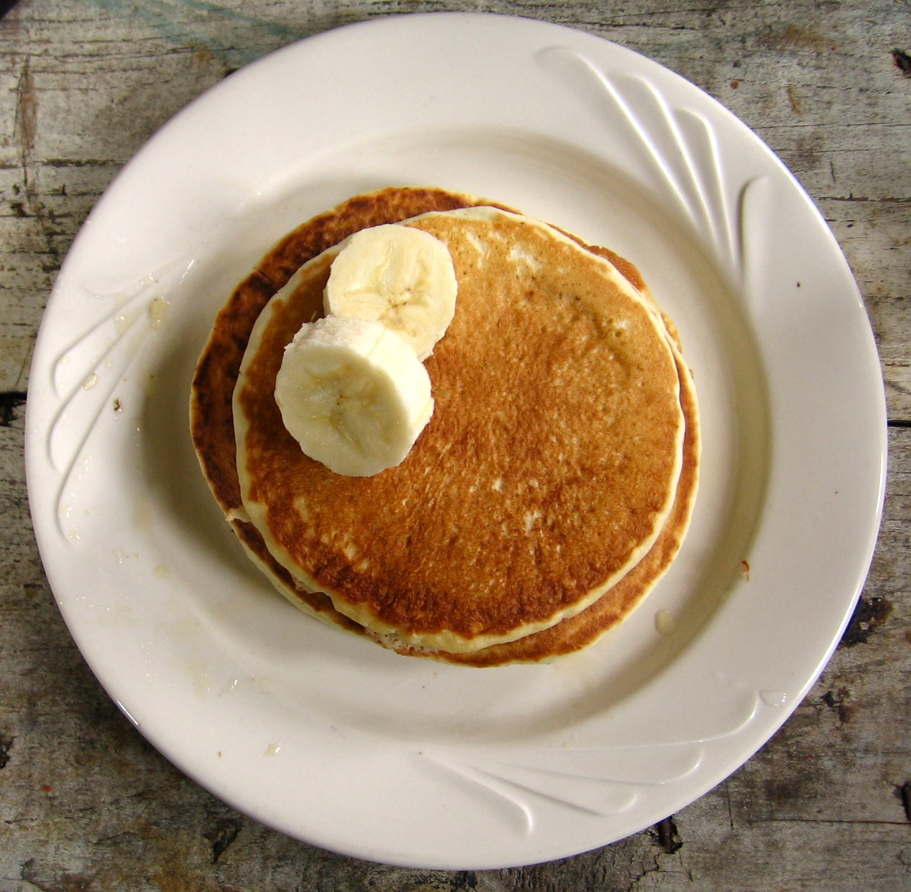

Smart Pancakes

By Brandon Martin-Anderson - https://www.flickr.com/photos/ewedistrict/23110406/, CC BY-SA 2.0, Link
Description
This is my take on a pancake recipe with chickpeas instead of eggs. The original recipe (in Norwegian) had soy milk as well so feel free to substitute with that if you want to.
Ingredients
- 1 can of chickpeas, rinsed
- 7-8dl melk
- 1dl crushed linen seeds
- 1/2dl sugar
- 5tblsp vegetable oil
- 1tblsp baking soda
- 3dl flour
Steps
- Mix the chickpeas with the milk using a mixer
- Add the rest of the ingredients little by little, and keep using the mixer
- Fry pancakes in butter or oil or whatever you prefer
Home